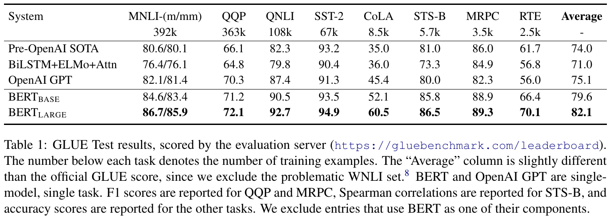
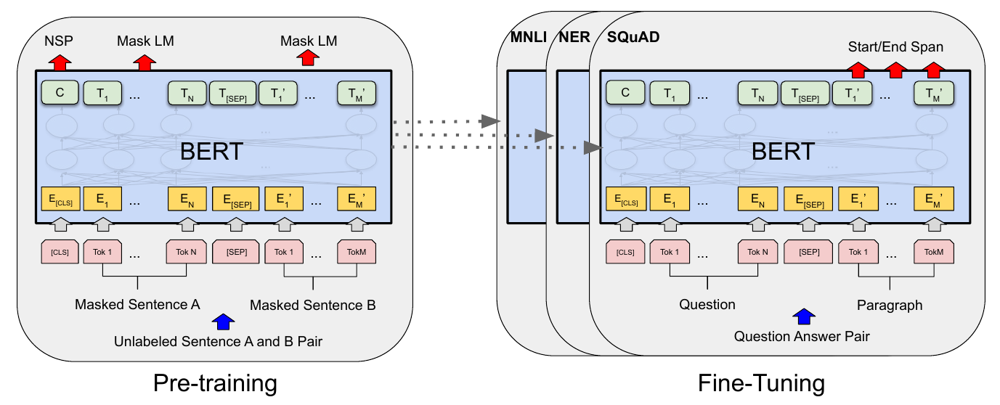
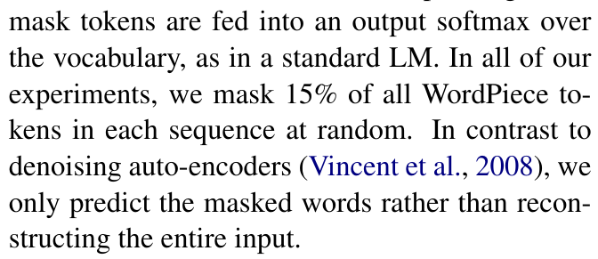
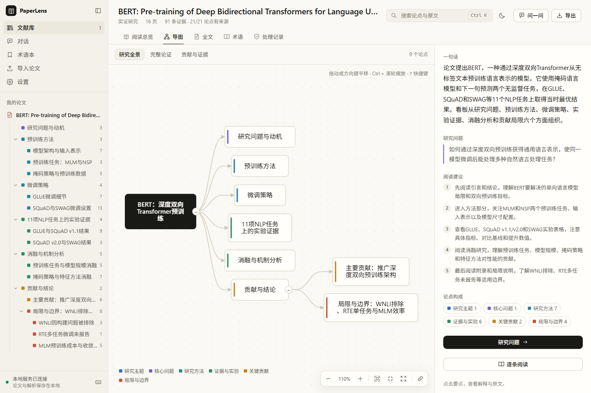

表 1 与第 4.1 节 印刷页 4176
为何同页有 82.1 和 80.5 两个分数？
表 1 给出的 BERTLARGE 平均分为 82.1，表注说明计算时排除了 WNLI。正文另列官方 GLUE 榜单分数 80.5。引用结果时要写清采用的口径。
核对 PDF 第 6 页
BERT: Pre-training of Deep Bidirectional Transformers for Language Understanding

Figure 1. Pre-training and fine-tuning.
论文试读
选一个问题，对照出版版 PDF 的图、段落或表格。
表 1 与第 4.1 节 印刷页 4176
表 1 给出的 BERTLARGE 平均分为 82.1，表注说明计算时排除了 WNLI。正文另列官方 GLUE 榜单分数 80.5。引用结果时要写清采用的口径。
核对 PDF 第 6 页
图 1 印刷页 4173
图 1 将预训练和微调并排画出。除了输出层，两侧采用相同的架构。不同任务从同一组预训练参数出发，微调时更新全部参数。
核对 PDF 第 3 页第 3.1 节 印刷页 4174
作者从每个序列中随机选取 15% 的 WordPiece 词元作为预测目标。模型利用上下文恢复这些位置上的原词元。
核对 PDF 第 4 页
示例选自 Jacob Devlin、Ming-Wei Chang、Kenton Lee 和 Kristina Toutanova 的 BERT 论文。图文按原页裁切，中文解读为本站整理。 出版页CC BY 4.0
阅读工作区
